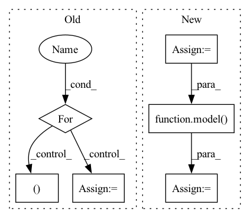

Pattern ID :7726

Before Change
now = time.strftime("%Y%m%d_%H%M%S")
filepath = os.path.join(os.path.abspath(os.getcwd()), "animations")
for i_batch, (x,y) in enumerate(zip(input_data, input_label)):
x_good = x[0]
x_good = x_good.reshape((1, x.shape[1], x.shape[-1]))
y_good = y[0]
y_good = y_good.reshape((1,1,1))
x_good = x_good.to(DEVICE)
y_good = y_good.to(DEVICE)
onehot_encoder = utils.make_onehot_encoder(label_features)
y_good = onehot_encoder(y_good.item()).to(DEVICE)
y_good = y_good.reshape((1, 1, y_good.shape[0]))
x_recon = model(x_good.float(), y_good.float())
break
After Change
// y_good = torch.unsqueeze(torch.unsqueeze(y_good, 0), 0)
// x_recon = model(x_good.float(), y_good.float())
x = input_data
y = input_label
x_recon = model(x,y) // has shape [batch_size, seq_len, 159]
logging.info("xrecon has")
logging.info(x_recon.shape)
_, seq_len, _ = x.shape
In pattern: SUPERPATTERN
Frequency: 3
Non-data size: 6
Instances
Fragment ID: 25619158
Project Name: bioshape-lab/pirounet
Commit Name: 149d8ab584d8a5bd20c5f508a727bb53b470cc0f
Time: 2022-05-17
Author: papillon@umail.ucsb.edu
File Name: move/generate_f.py
M Class Name: AnonimousClass
N Class Name: AnonimousClass
M Method Name: recongeneral(8)
N Method Name: recongeneral(8)
M Parent Class:
N Parent Class:
M File Name: move/generate_f.py
N File Name: move/generate_f.py
M Start Line: 367
M End Line: 382
N Start Line: 384
N End Line: 388
'>
Before Change
train_loader = torch.utils.data.DataLoader(train_dataset, batch_size=batch_size, shuffle=shuffle)
criterion = torch.nn.MSELoss().to(device)
for batch_data in train_loader:
encoder_inputs, labels = batch_data
outputs = model(encoder_inputs, edge_index)
assert outputs.shape == (batch_size, node_count, num_for_predict)
def test_mstgcn():
After Change
T = len_input
x_seq = torch.zeros([batch_size,node_count, node_features,T]).to(device)
target_seq = torch.zeros([batch_size,node_count,T]).to(device)
edge_index_seq = []
for b in range(batch_size):
for t in range(T):
x, edge_index = create_mock_data(node_count, edge_per_node, node_features)
x_seq[b,:,:,t] = x
if b == 0:
edge_index_seq.append(edge_index)
target = create_mock_target(node_count, num_classes)
target_seq[b,:,t] = target
shuffle = True
train_dataset = torch.utils.data.TensorDataset(x_seq, target_seq)
train_loader = torch.utils.data.DataLoader(train_dataset, batch_size=batch_size, shuffle=shuffle)
for batch_data in train_loader:
encoder_inputs, _ = batch_data
outputs1 = model(encoder_inputs, edge_index_seq)
outputs2 = model(encoder_inputs, edge_index_seq[0])
assert outputs1.shape == (batch_size, node_count, num_for_predict)
assert outputs2.shape == (batch_size, node_count, num_for_predict)
def test_mstgcn():
'>
Fragment ID: 25619166
Project Name: benedekrozemberczki/pytorch_geometric_temporal
Commit Name: 8efa512ff3ac06546a082de036a85428720abd7a
Time: 2021-03-20
Author: He_YX@outlook.com
File Name: test/convolutional_test.py
M Class Name: AnonimousClass
N Class Name: AnonimousClass
M Method Name: test_astgcn(0)
N Method Name: test_astgcn(0)
M Parent Class:
N Parent Class:
M File Name: test/convolutional_test.py
N File Name: test/convolutional_test.py
M Start Line: 248
M End Line: 285
N Start Line: 236
N End Line: 266
'>
Before Change
train_loader = torch.utils.data.DataLoader(train_dataset, batch_size=batch_size, shuffle=shuffle)
criterion = torch.nn.MSELoss().to(device)
for batch_data in train_loader:
encoder_inputs, labels = batch_data
outputs = model(encoder_inputs, edge_index)
assert outputs.shape == (batch_size, node_count, num_for_predict)
def test_astgcn_change_edge_index():
After Change
T = len_input
x_seq = torch.zeros([batch_size,node_count, node_features,T]).to(device)
target_seq = torch.zeros([batch_size,node_count,T]).to(device)
edge_index_seq = []
for b in range(batch_size):
for t in range(T):
x, edge_index = create_mock_data(node_count, edge_per_node, node_features)
x_seq[b,:,:,t] = x
if b == 0:
edge_index_seq.append(edge_index)
target = create_mock_target(node_count, num_classes)
target_seq[b,:,t] = target
shuffle = True
train_dataset = torch.utils.data.TensorDataset(x_seq, target_seq)
train_loader = torch.utils.data.DataLoader(train_dataset, batch_size=batch_size, shuffle=shuffle)
for batch_data in train_loader:
encoder_inputs, _ = batch_data
outputs1 = model(encoder_inputs, edge_index_seq)
outputs2 = model(encoder_inputs, edge_index_seq[0])
assert outputs1.shape == (batch_size, node_count, num_for_predict)
assert outputs2.shape == (batch_size, node_count, num_for_predict)
'>
Fragment ID: 25619165
Project Name: benedekrozemberczki/pytorch_geometric_temporal
Commit Name: 8efa512ff3ac06546a082de036a85428720abd7a
Time: 2021-03-20
Author: He_YX@outlook.com
File Name: test/convolutional_test.py
M Class Name: AnonimousClass
N Class Name: AnonimousClass
M Method Name: test_mstgcn(0)
N Method Name: test_mstgcn(0)
M Parent Class:
N Parent Class:
M File Name: test/convolutional_test.py
N File Name: test/convolutional_test.py
M Start Line: 291
M End Line: 328
N Start Line: 293
N End Line: 311